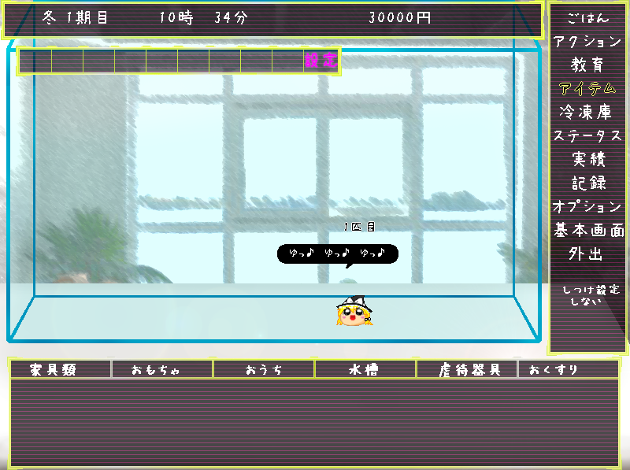

|  | ◆アイテム◆ 水槽内に「ゆっくり」用のアイテムを使用します。 種別によって、以下に分かれています。 家具類……トイレや給水器、「ゆっくり」が隠れる用の土管など、家具的な物を設置します。 おもちゃ……「ゆっくり」が遊ぶおもちゃを設置します。おもちゃは「すべりだい」や「トランポリン」などの据え置き型のアイテムのほかに、「ボール」や「宝物類」などの「ゆっくり」が動かして遊ぶアイテムがあります。 おうち……小型のハウスを設置します。ハウス内の画面は別ウインドウで表示されます。ハウス内の別ウインドウは閉じることもでき、再表示したい場合はおうち内を表示を選択してください。 水槽……水槽内の床材を変えることができます。落下ダメージ、衛生環境に影響があります。 虐待器具……虐待用のアイテムを設置できます。 おくすり……「ゆっくり」に薬を与えることができます。 |